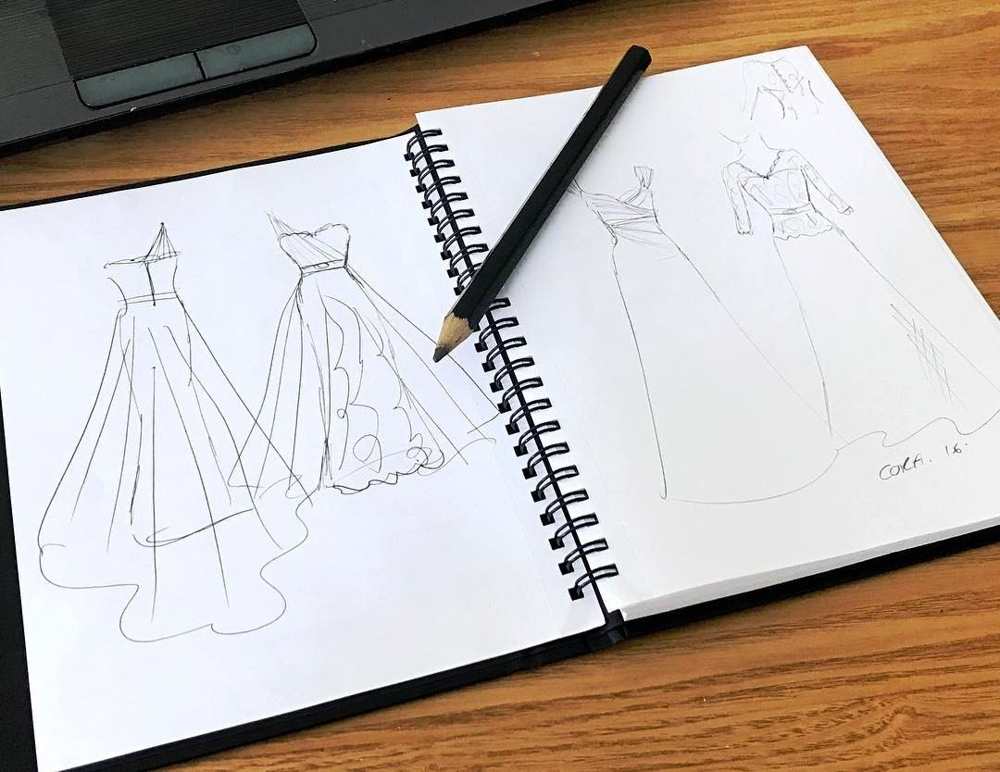
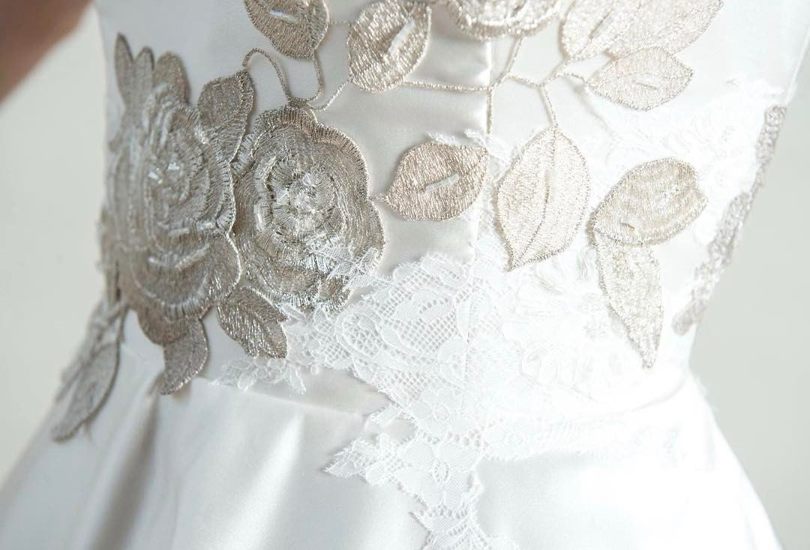
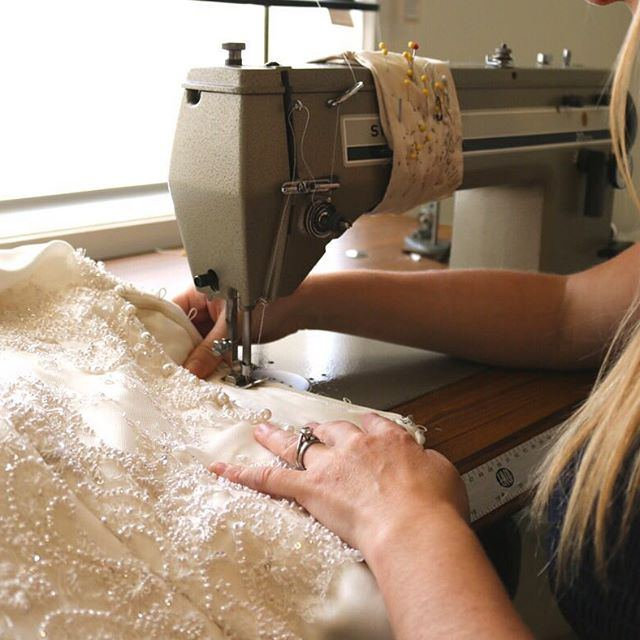
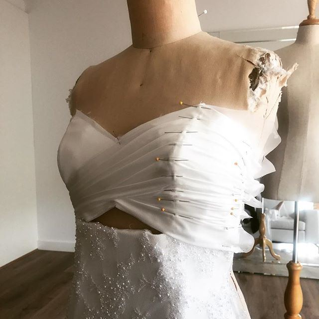
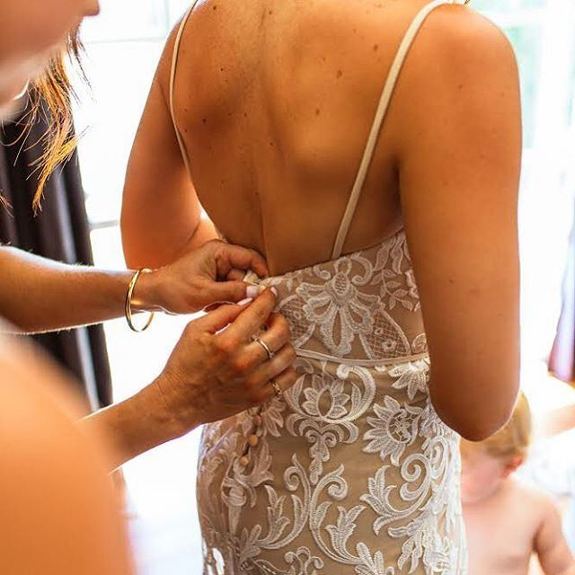
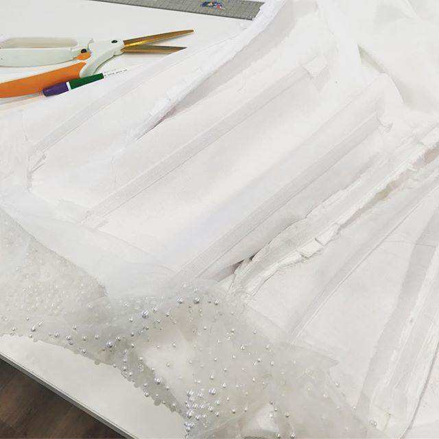
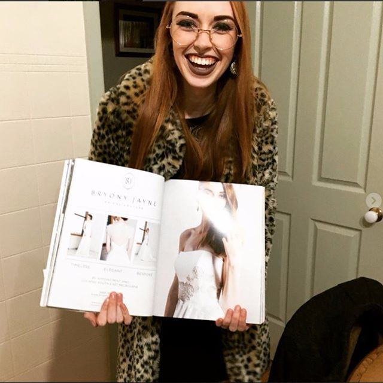

Custom Bridal Couture · Berwick, Melbourne
Bespoke Wedding Dresses in Melbourne
A wedding dress designed around nobody but you. Patterned from your measures, crafted from fine silks and delicate French lace, and sewn by hand in our private Berwick atelier.
The Bespoke Philosophy
Not made in a factory. Made for you.
Choosing a bespoke bridal gown means stepping away from mass-produced retail racks and standard sizes. Instead, you enter a calm, private space where your ideas are genuinely heard.
Whether you arrive with a clear vision, a collection of saved photographs, a sketch, or simply a feeling of how you want to move on your wedding day, Bryony works with you to turn your ideas into a perfectly fitted reality. Every design is drawn, patterned and hand-sewn in our Berwick studio.
- Tailored to your bodyDrafted from your precise measurements, eliminating the awkward fit issues of standard retail sizing.
- Authentic luxury fabricsPure silks, French Chantilly lace, silk organza and delicate crepes selected specifically for your gown.
- Considered budget alignmentDesign, fabrics and budget are discussed openly from your very first consultation before any commitment is made.
- Total creative freedomCombine elements you adore: necklines, sleeve details, train length, corsetry and hand embroidery.


-
01
Say hello
To beginGet in touch to book your complimentary first consultation. Tell us roughly when your wedding is and what you picture. Evening appointments are available to fit around your work and schedule.
-
02
The first consultation
First visitBring any photos, drawings, Pinterest boards or heirloom pieces that inspire you. We talk through your venue, silhouettes and fabrics, discussing costs openly so you have total clarity before deciding.
-
03
Design, fabric & plan
6–9 months outYour design is finalized and measurements are taken. We order your chosen silks and laces, then create an individual master pattern drawn specifically for your body shape.
-
04
First fitting (toile)
3–6 months outYou try on a calico mock-up of your bodice and dress. This allows us to sculpt the fit, adjust neckline heights and refine proportions before cutting into your final precious fabric.
-
05
Second fitting (silk)
4–6 weeks outYour gown in real fabric. We check the drape, movement, hemline with your chosen wedding shoes, and ensure you feel completely comfortable moving and sitting in your dress.
-
06
Final fitting & handover
Before the weddingEverything is completed, pressed and pristine. Bring whoever will help you dress on the day so we can demonstrate bustling, buttons and closures. Then you take your finished dress home.
Inside the Studio
Sewn with precision in Berwick.
A look behind the scenes at pattern drafting, hand-stitched lace and bridal craftsmanship.





Drag photographs or use arrow keys
Frequently Asked Questions
Bespoke Questions & Answers
Helpful advice for brides considering a custom dress in Melbourne.
How much does a bespoke wedding dress cost?
Because every bespoke dress is completely unique in its fabric choice, embellishments and structural complexity, pricing depends on what you wish to create. During your complimentary first consultation, Bryony discusses fabric options, design elements and your preferred budget openly before any commitment is made.
How far in advance should I book my first appointment?
We generally recommend starting 6 to 9 months before your wedding date. This allows comfortable time for pattern drafting, toile mock-up fittings, fabric sourcing and final finishing touches. If your wedding is closer than 6 months, please call us directly to check our studio schedule.
What should I bring to my first appointment?
Bring any photos, screenshots or Pinterest boards of dresses, necklines, skirts and details that appeal to you. If you already have your shoes or heirlooms you wish to include (such as lace from a family gown), feel free to bring them along.
Can I adapt one of your signature studio gowns?
Absolutely. Many brides fall in love with one of our seven signature studio gowns (such as Winter, Alice or Isadora) and choose to adapt it: changing the neckline, adding custom sleeves, adjusting the train length or substituting a different lace or silk.
Do you make dresses for bridesmaids or the bridal party?
Yes. In addition to bridal gowns, Bryony creates custom dresses for bridesmaids, mothers of the bride, and flower girls, ensuring the entire bridal party looks beautifully cohesive.
Begin Your Gown
Book your complimentary consultation.
Our Berwick studio is by appointment only, giving you private, dedicated time to explore ideas, fabrics and silhouettes with Bryony.
Consultations are complimentary and with zero obligation. Flexible hours including evenings are available.
- Call directly0433 972 656The fastest way to reach the studio.
- Email Bryonybryony@bryonyjayne.com.auAll messages are answered personally.
- Studio LocationBerwick, MelbourneWelcoming brides from across Melbourne and Victoria